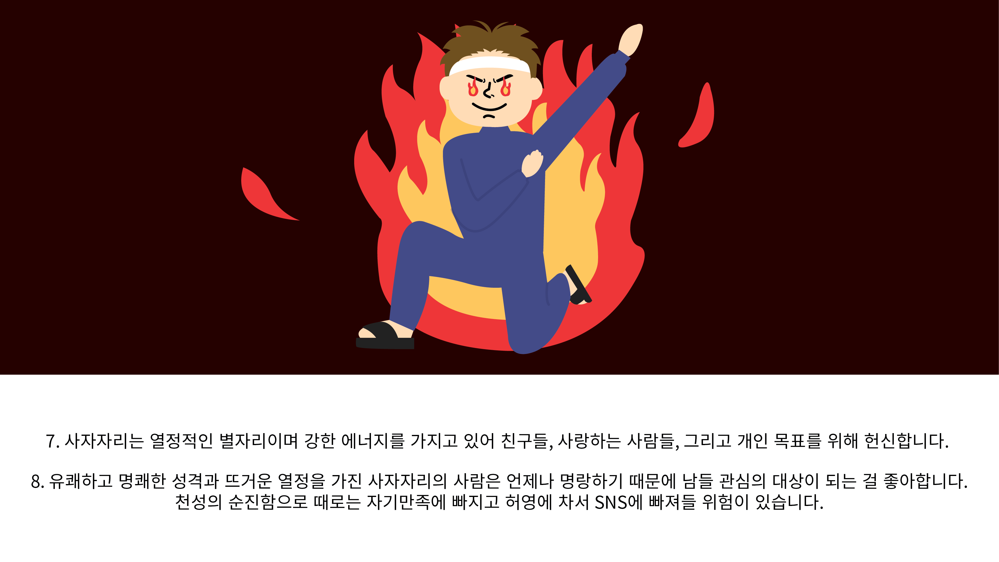

LEO
사자자리정보
그리스로마신화
사자자리 특징
남자 특징
여자 특징
돈과 성공
capter6
사자자리 특징

capter6
남자 특징
사자자리 남자 특징
1. 강한 자신감과 곤란을 극복하는 끈기가 있고 자신 생각만이 절대적이라고 믿는 강한 개성을 가지고 있습니다.
2. 불가능이란 없다는 신념을 갖고 있으므로 어떠한 난관에 부딪히더라고 포기하기보다는 의연히 헤쳐 나가는 타입입니다.
3. 뚜렷한 개성이 있지만 당당한 성격 때문에 주위에 많은 사람들이 따르게 되며 지도력 뛰어난 편입니다.
4. 다른 사람의 지배나 명령 지시 받기를 싫어하며 매사 자기 위주로 하려는 경향이 많습니다.
5. 인생이 비약적으로 굴곡이 심한 편이어서 일찍이 재물을 모을 수 있으나 실패도 3, 4번은 하게 됩니다.
6. 강직하고 독선적인 성격으로 여러 사람에게 인정도 받지만 그만큼 적들도 많습니다.
7. 좋아하는 여성에게는 애정 표시가 능숙하지 않기 때문에 자신의 깊은 애정을 전달 못하고 애태우는 편입니다.
capter6
여자 특징
사자자리 여자 특징
1. 칭찬하는 말에는 터무니없게 약하고 바로 우쭐대는 기분이 되어 버립니다.
2. 깊은 애정을 품고 있어 친구들의 신뢰를 가득 받는 형입니다.
3. 본인의 모든 성질이 좋던 나쁘던 표출하기 때문에 주목받는 사람입니다.
4. 인기도 많고 눈에 띄게 치솟는 인물이며 상대가 연상이라 할지라도 절대 고개를 숙이지 않습니다.
5. 무섭거나 두려운 것이 없는 영웅 타입이며 자신이 주도권을 잡아야 직성이 풀립니다.
6. 자신이 주목받지 못한다고 생각할 때는 슬럼프에 빠집니다.
7.자신이 중심이라면 최고의 기분으로 행복감을 느낍니다.
8. 스타일도 좋고 눈에 띄는 몸매이며 긴 머리가 어울리는 미인 유형입니다.
capter6
돈과 성공
사자자리의 돈과 성공
1. 강한 자신감과 곤란을 극복하는 끈기를 가지고 있습니다.
2. 일가를 부흥시키는 엄청난 재주를 가지고 있습니다.
3. 극히 어려운 역경에는 잘 버티는 편이지만 좋은 환경이나 조용한 사람에겐 약합니다.
4. 사람을 끄는 매력이 많으므로 이점을 살리는 직업을 택해야 합니다.
5. 판단력, 개척력, 아이디어가 뛰어나므로 벤처와 유행에 민감한 사업에서 두각을 드러냅니다.
메인화면 ׀ 사자자리정보 ׀ 그리스로마신화 ׀ 사자자리특징
(44610) 울산광역시 남구 대학로 93 울산대학교 Tel: 052-277-3101~3
Copyright© 2022 All rights reserved by 구다빈
capter6
사자자리 특징